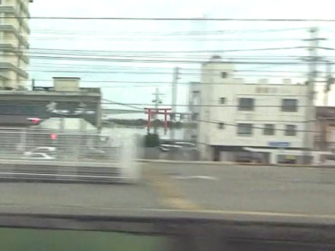

- 區間
- 濱松 → 豐橋
- 座位側
- 往新大阪：A座左側／E座右側；往東京則相反
- 通過時間
- 希望號離開東京後約73分鐘
- 可見時間
- 數十秒水景與地標的概略可見區間；會隨列車與車速而變動。
背後的故事
濱名湖是一連串車窗風景
濱松至豐橋之間，城市突然向水面敞開，水幾乎就在車窗下方。東海道新幹線很少如此貼近水，過橋時與其說經過湖，不如說滑行在海上。A座與E座可見不同地標，兩邊都值得看。
從東京前往新大阪時，接近濱松→豐橋區間，開始留意兩側車窗。往東京時順序相反。
觀看重點
跨越濱名湖時會出現什麼
A座側剛進入弁天島時，建築間會閃現紅色鳥居形象徵塔。它是水岸地標，並非神社入口；完整湖景敞開前，可能就已消失。

E座側先找寬廣的濱名湖競艇場與看台，接著是白色Sun Marine Bridge。這座斜張橋有獨特傾斜塔柱，是為改善競艇場周邊交通與安全而建。
水面上一排排木樁與架子，是濱名湖海苔與牡蠣養殖風景。此處是淡鹹水混合的汽水湖，當地海苔養殖已有兩百多年歷史。水上的生產景觀，和遠方岸線一樣具有特色。
空氣格外清澈時，從E座可能看見橋與湖後方的富士山。與三島、新富士附近的大幅山景不同，這是水天交界上的微小遠方輪廓；在「五種富士景」中，能找到它本身也許就最有成就感。
湖的遠方
第二個亮點：濱名湖後方的富士山
湖後方遙遠而小巧的富士山。
濱名湖後方的富士山，是「五種富士景」中距離最遠的一處。從E座，視線由Sun Marine Bridge移向水天交界。冬季空氣清澈時較容易找到，尋找本身就是樂趣。
富士山比Sun Marine Bridge遠得多，靠近水天交界。以橋為地標，再把目光移向它右側更遠處。
地圖
位置一覽
開啟地圖切換景點位置與新幹線觀賞位置。
你的車窗導覽
別錯過窗外風景
動態風景
動態中的濱名湖
看看列車彷彿行駛在水上的濱名湖區間。
山側E座的濱名湖。
海側A座的濱名湖。
這些影片使用YouTube官方嵌入播放器。
延伸閱讀
參考資料
官方指引與車窗風景紀錄。